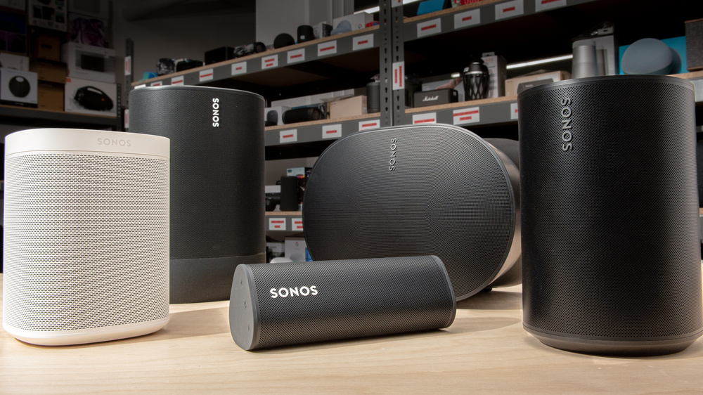
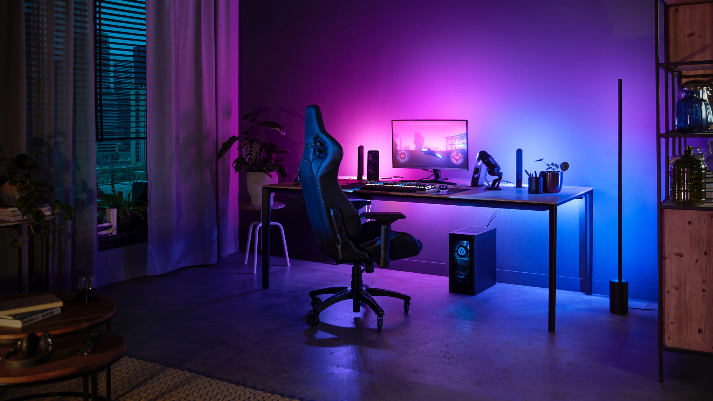
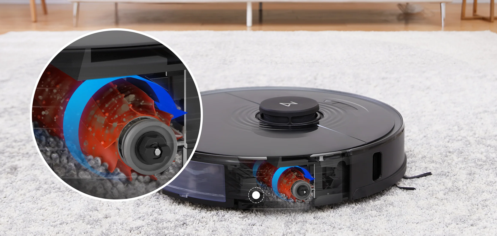
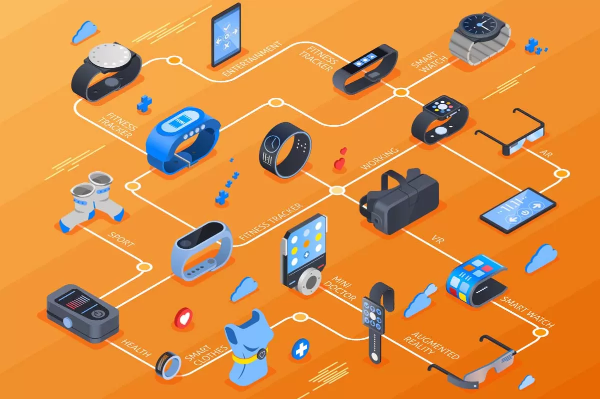

Smart Speakers
Smart Speakers are the heart of the smart home; for example, Alexa is used as a voice assistant to control other IoT devices for voice commands. It streamlines your everyday tasks into a less stressful routine. Another remarkable smart speaker is the Sonos Speaker System: Portable Sonons Roam can be connected to a network of speakers through its app. While connecting multiple speakers, an immersive home studio is then created. With the built-in Alexa voice assistant, the Sonos system allows for a seamless control of the devices, complimented with a high quality sound experience.
Smart Lighting
Smart Lighting gives homeowners full control over their lights. It features dimming, color changing, and scheduling functions that save energy. Smart Lighting is one of the most favorable IoT because of how it saves electricity costs.
Smart Vacuum Cleaners/Robots
Smart Vacuum Cleaners are designed to simplify household cleaning with built in advanced sensors and navigation systems. Like Roborock, one of the most well known vacuum robot brands, have different versions that has automatic trash disposal, mopping capabilities, as well as scheduled time for cleaning. All of those can be controlled through a click away after customization. It saves time, and your energy.
Wearables/Health Tracking Devices
Many people have at least tried on a wearable, be it bluetooth headphones, fitbits, VR headsets, etc. Everyone find them convenient. Unlike the 3.5mm cabled headphones, w ireless earbuds provide no more bulky cable, and gives users all-day comfort, with long battery life and no limited mobility.